Radical-hospitality
Building a safer couch surfing app

Radical hospitality is a couch surfing app that is safer and more community oriented.
The Challenge
Travel is expensive, and it can be difficult to really connect into a community if you are staying in generic hotels. Many adventurous travellers chose this option however, because of safety concerns. RH provides introductions to a global community connected by shared principles and allows folks to ask for and offer everything from use of a bike, help with way finding, sharing meals, or accommodations.
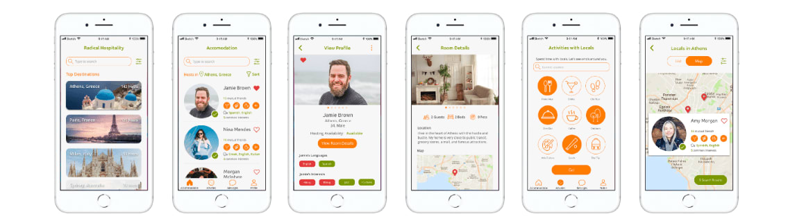
Project Goals
Create a basic platform allowing people to register and sign up to bepart of Radical Hospitality. A simple design that allows people to connect using principles of “ask and offer”. The client envisions this to be similar to couch surfing but safe, connected, and well beyond simply offering accommodation.
Research
I conducted a survey and interviews to find out what hosts and travellers need. I received 46 responses and compiled them into statistics.
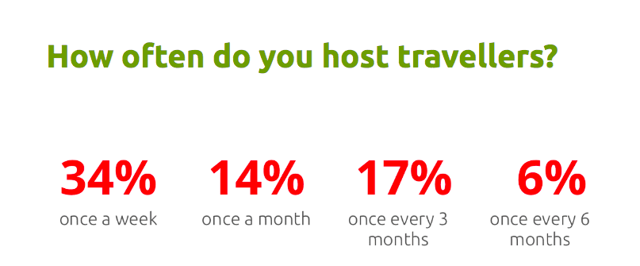
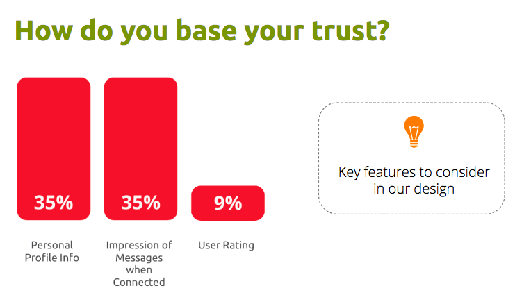
User personas
Based on the research I came up with 2 different user personas, one for the host side and one for the traveller side.
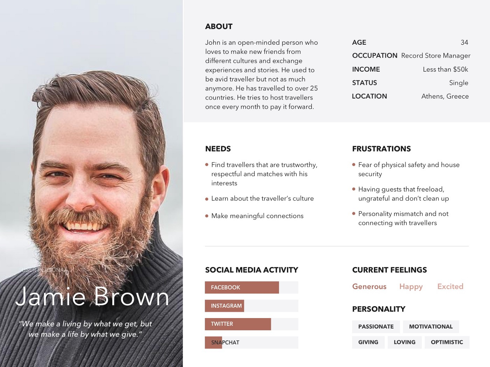
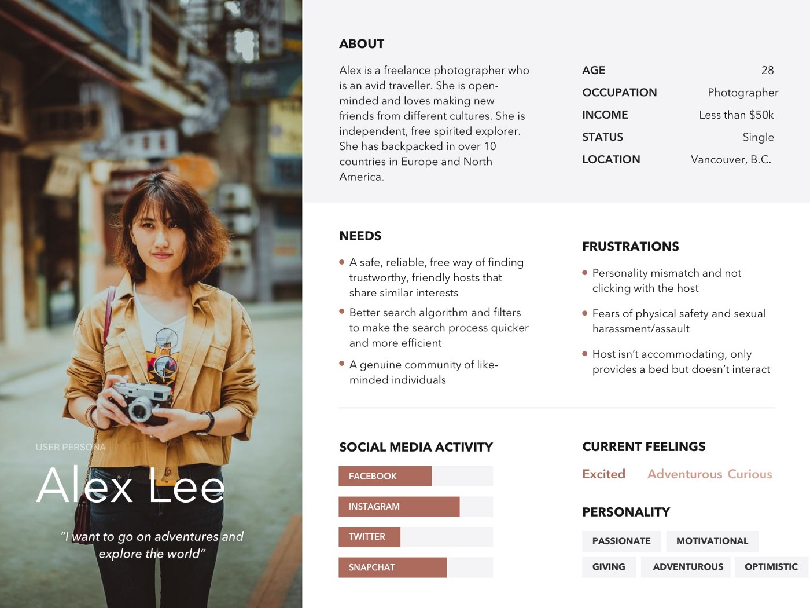
Problem 1
From the research we found that the primary concern for couch surfers were concerns about safety and security
Solutions
- Invite-only (puts responsibility on the users)
- In-depth user profiles
- Verification — “The Verified check mark makes me feel more secure about hosts.”
- Mutual Friends (Integration with Facebook)
Problem 2
Concerns about personality mismatch and lack of social connections between traveller and host
Solutions
- Interest tags/Common interests
- In-depth user profile — “Why I’m on Radical Hospitality”, “What I Can Share With Hosts”, and “What I Want to Learn” section
- Explore by activities feature to increase engagement between hosts and travellers
- Travellers can meet up with locals who are interested in activites
Planning
I came up with a storyboard to further understand the use cases of the app.
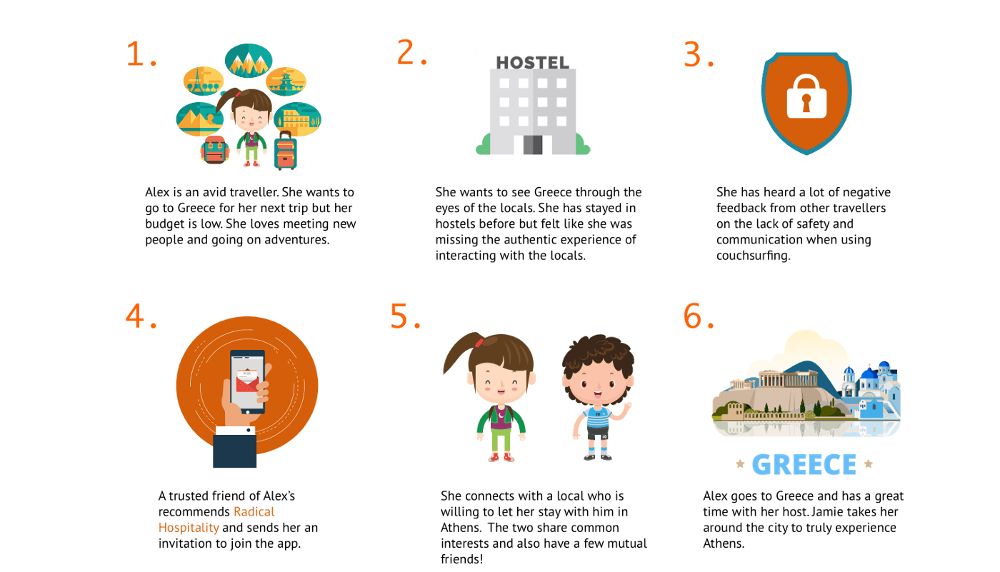
Feature prioritization
To understand the core features of the prototype I created a feature prioritization list.
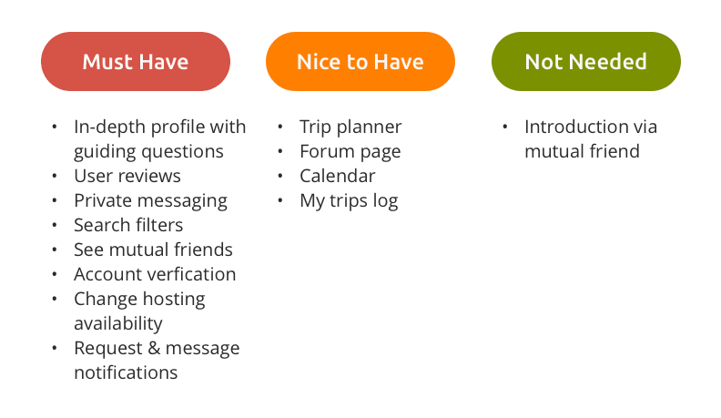
Paper Prototypes
I created paper prototypes to ideate and to test the designs before putting them into medium fidelity using Sketch.
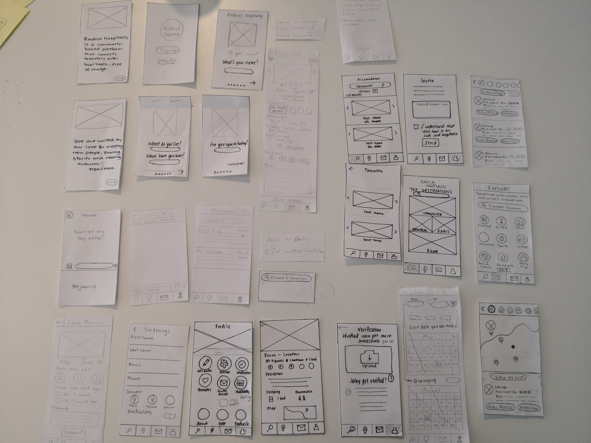
Mid-fidelity Designs
Mid fidelity designs were created for user testing by putting together a interactive prototype.
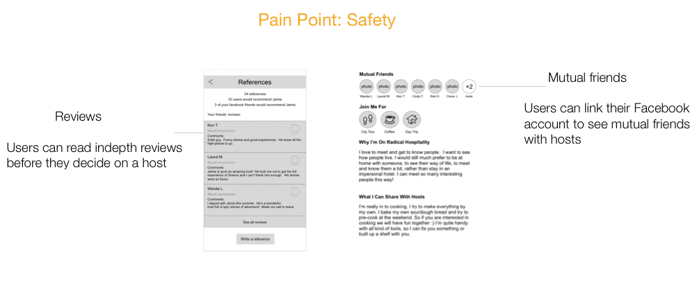
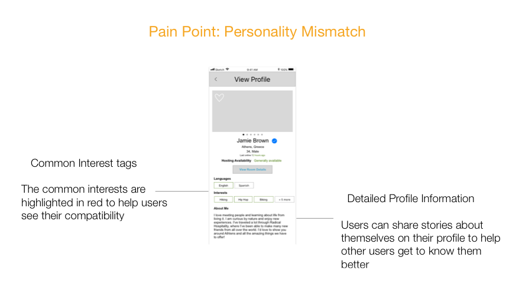
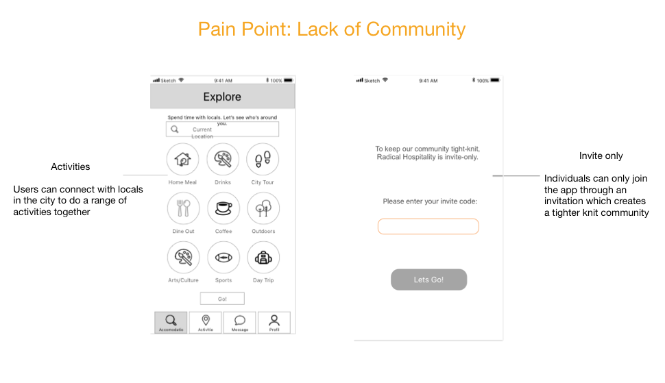
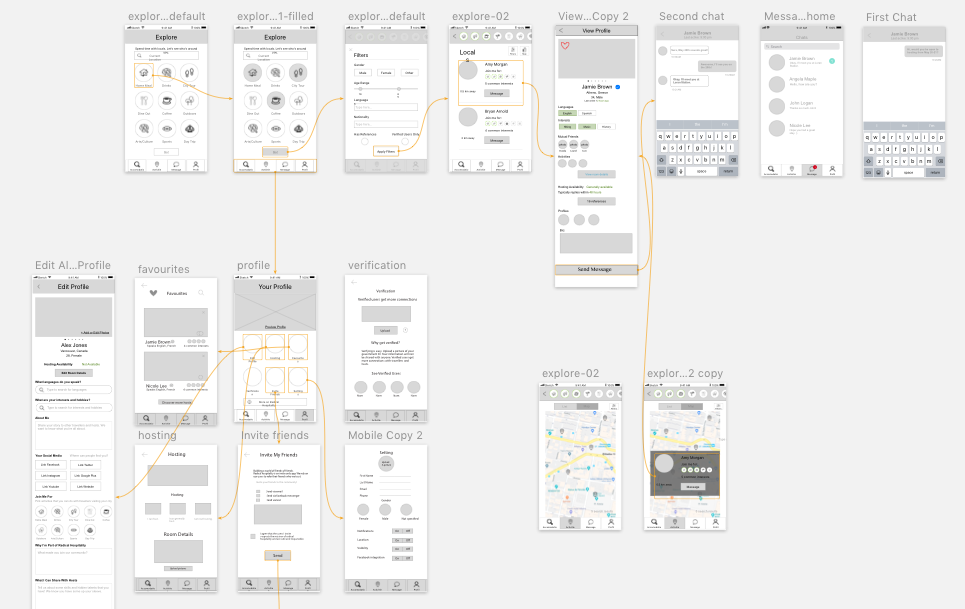
Testing Insights
Through medium fidelity, we found that the bottom navigation icons were a bit misleading at the beginning. We had a magnifying glass at first for the accommodation search function but because there is another page with the search function we changed the magnifying glass to a bed icon to make it more clear that it is for accommodation.
Another feature that was edited was the hosting options. In this option, users were confused about what “I can generally host” option meant. We decided to take this option out to minimize the confusion for travellers.
Another insight that we had during testing was that users were unsure which host to pick because there was not enough information on the browse accommodation page. Therefore, we decided to add information that users want to use such as languages, common interests, mutual friends, and a number of references on the browse page as well.
Final Design
Read the full case study: